Jobs, scored against your terms
Each posting gets a score and a check for each line you will not cross: contract, day rate, where, commute and language.
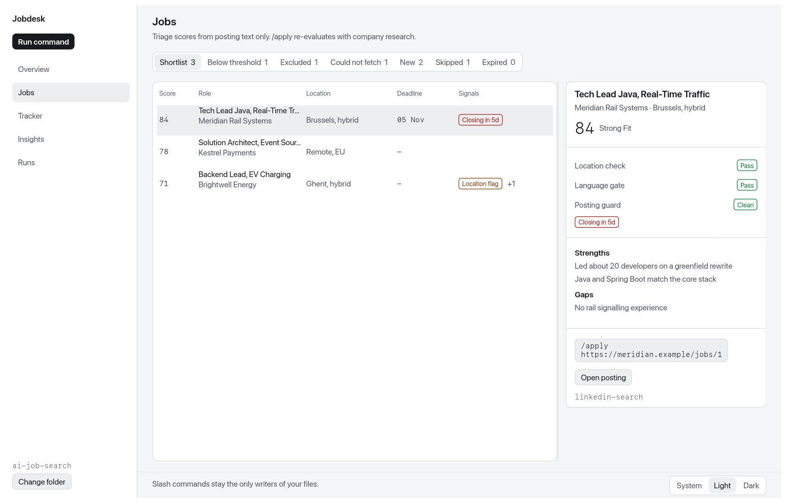
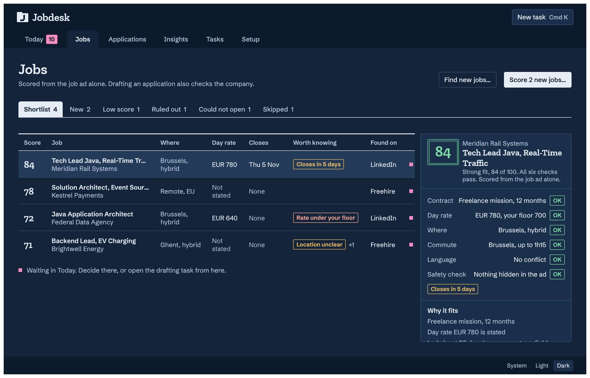
Jobdesk puts the ai‑job‑search slash commands on a desk. It deals your decisions one card at a time and runs any command through your own Claude Code. Nothing runs until you start it.
Bring your own Anthropic API key, stored only in your system keychain. How
Both buttons open the latest release on GitHub. View the source
Needs an Apple silicon Mac or 64-bit Windows, the Claude Code CLI, running on your Anthropic API key or its own sign-in, and an ai‑job‑search checkout. Setup steps
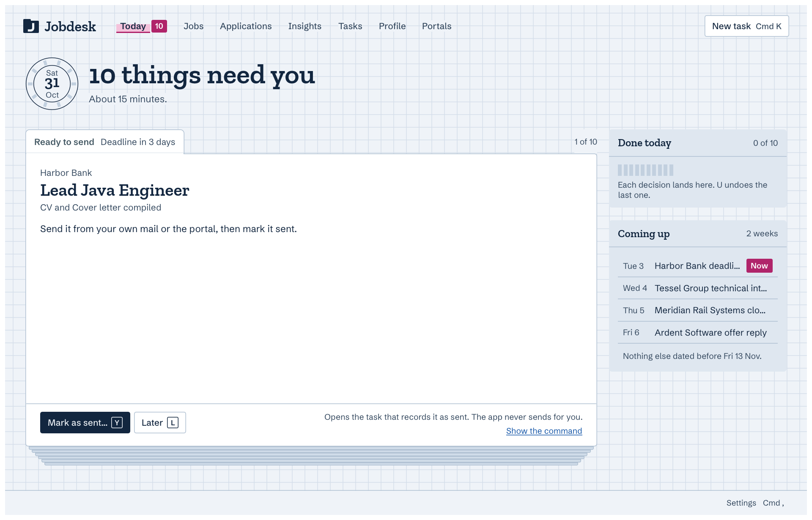
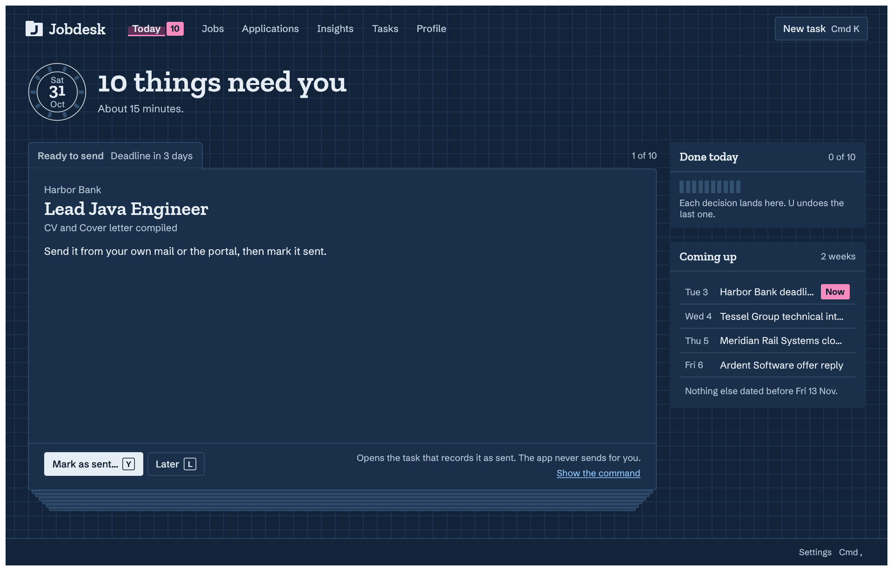
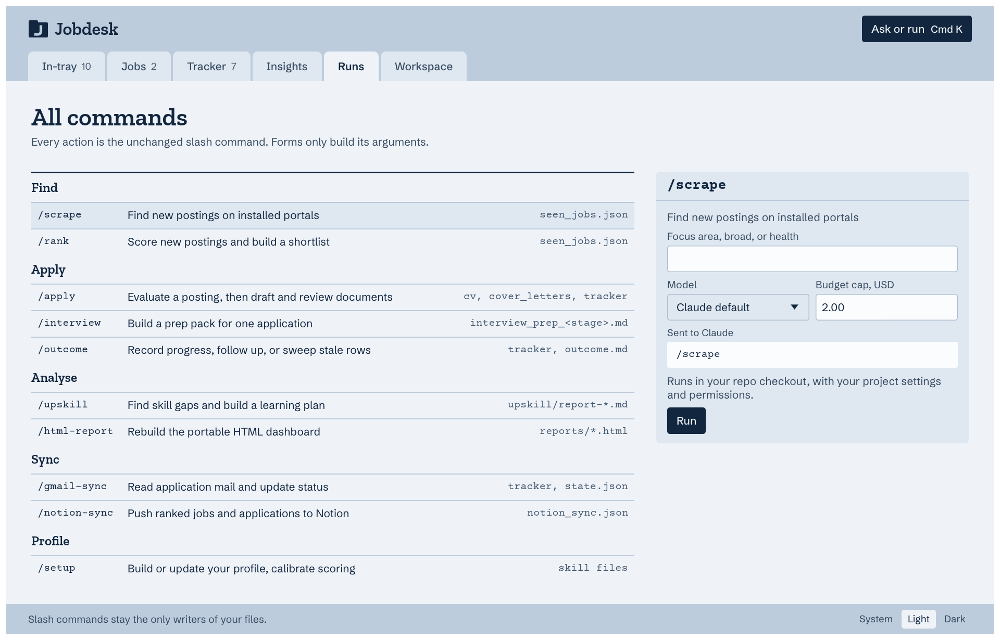
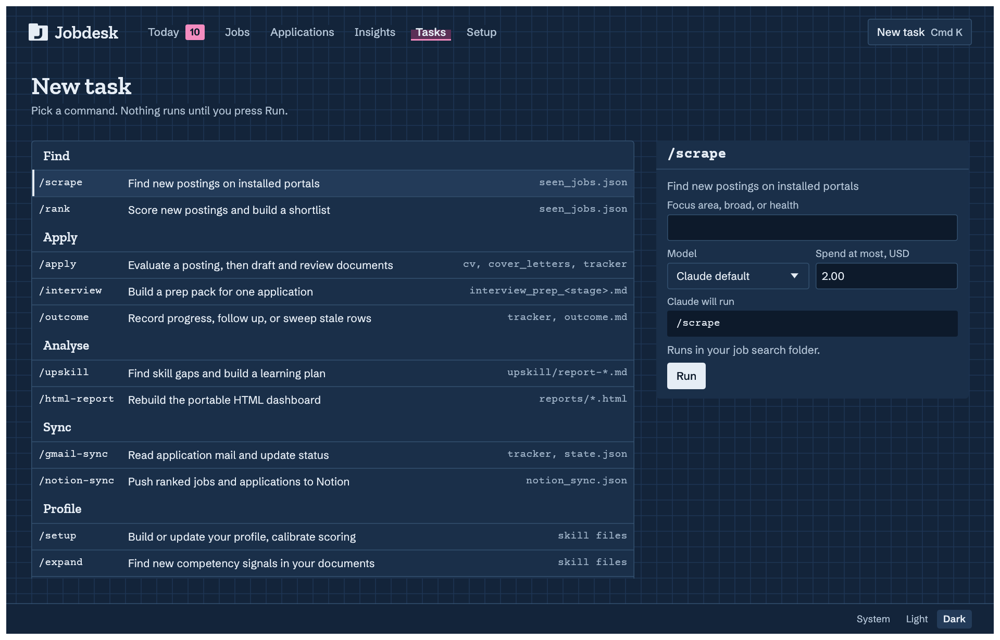
ai‑job‑search is a set of Claude Code slash commands that find postings, score them and draft your applications. Jobdesk is a desktop GUI over them: each screen shows what the commands keep in your checkout, and follows along live as they run.
Each posting gets a score and a check for each line you will not cross: contract, day rate, where, commute and language.


OK, Unclear or Fails, with the reason beside it.
Start any slash command and follow it as a report. When Claude asks, its question waits above the reply box, with one-click replies at known stop points.
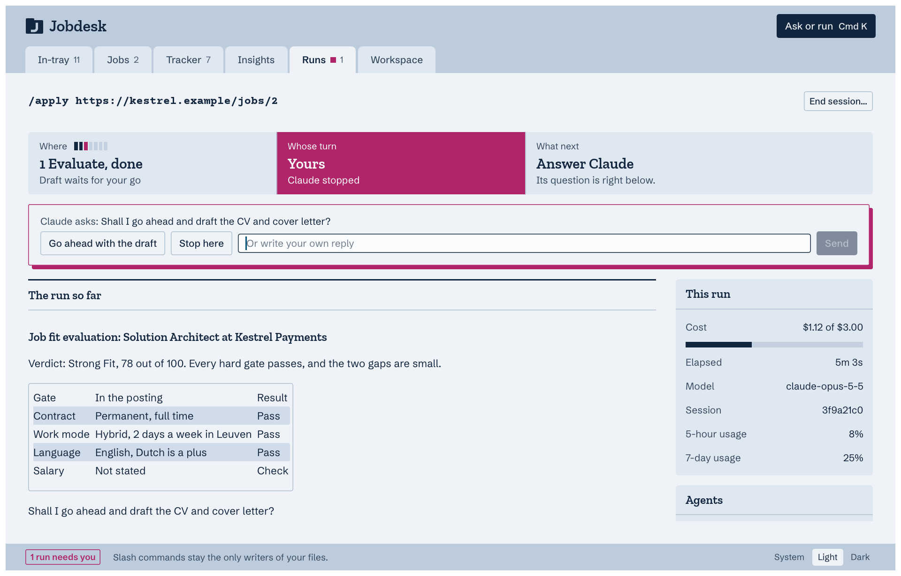
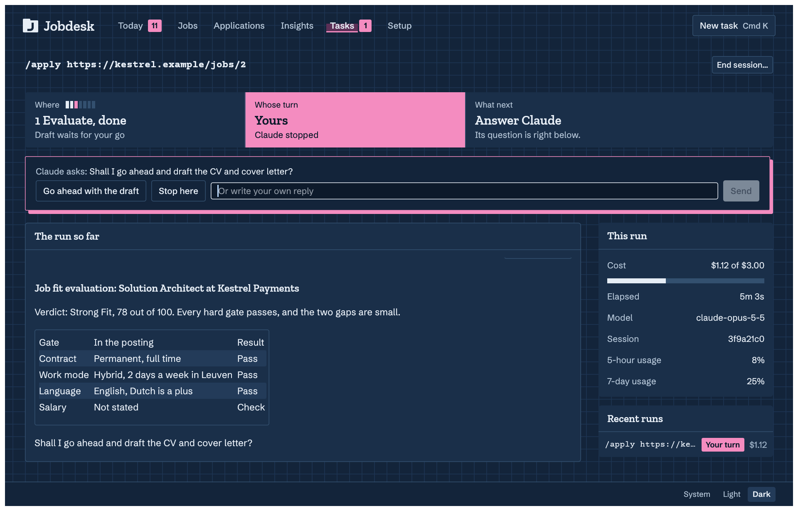
From Not sent yet to Closed. A pink edge marks what waits for you in Today.
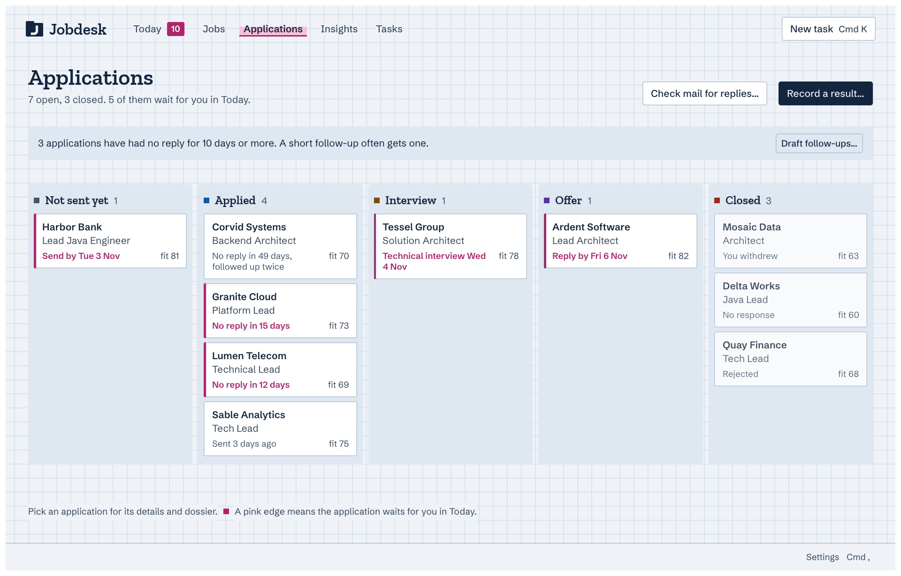
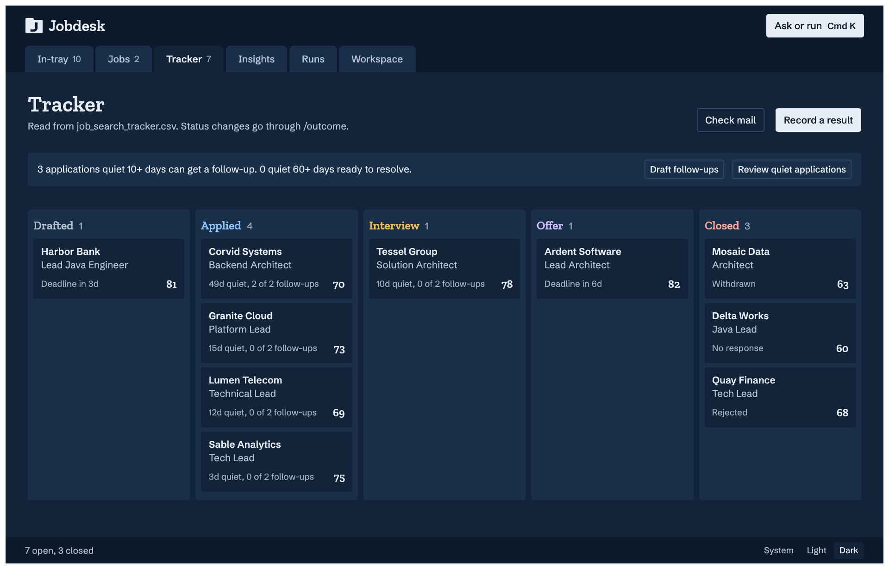
The PDFs, verification, keyword coverage, evaluation, prep packs and follow-ups of each application, in one place.
What Claude reads about you, topic by topic. Edit a block in place, and preview your CV PDFs with how fresh each is.
Usage statistics count spend, tokens and cache hits from Jobdesk's own run logs on your computer. Set a monthly cap in Settings.
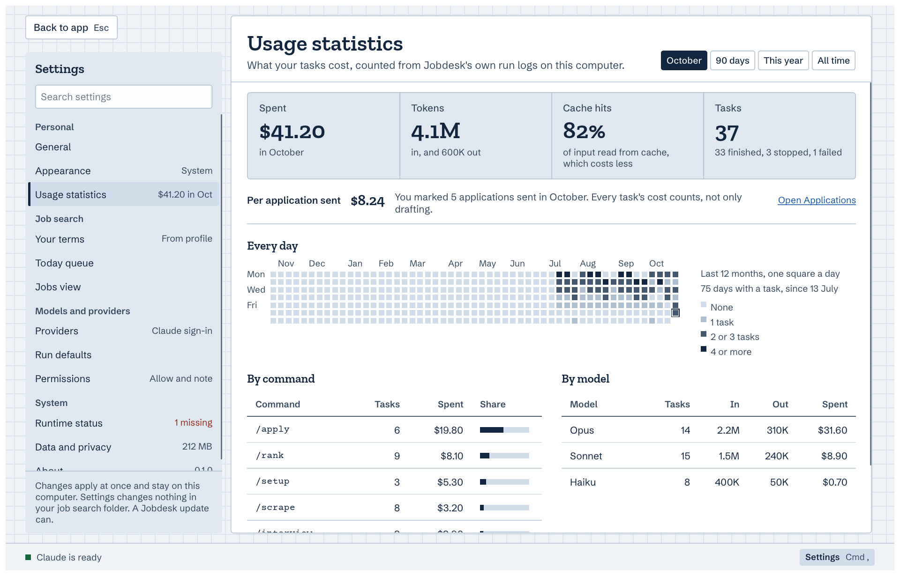
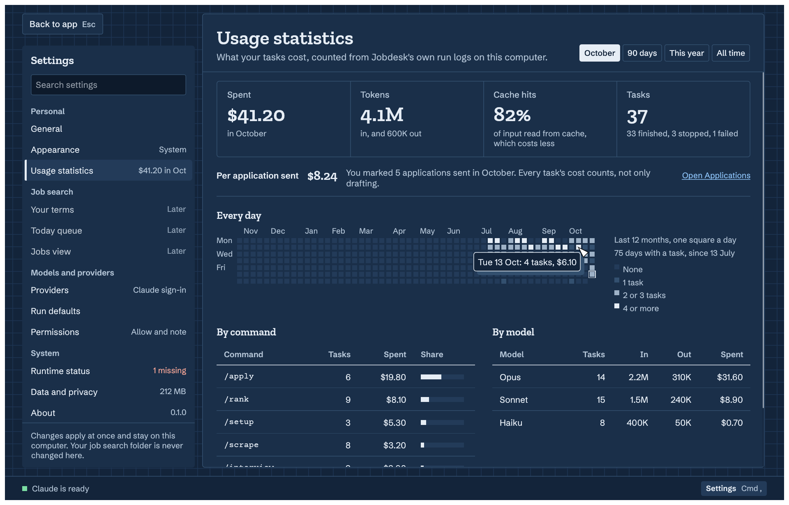
Jobdesk sits on top of what you already have: an ai‑job‑search checkout, the Claude Code CLI, and your own Anthropic API key or Claude Code’s sign-in.
From New task, or from a card's Y. You see the line Claude will run, and you press Run.
Through your local claude CLI, in your job search folder, on your own API key or Claude Code’s sign-in. One run works at a time.
/apply https://kestrel.example/jobs/2The command writes your checkout. Today, Jobs, Applications and Insights update as it does.
Paste a key from your Anthropic Console in Settings › Providers. Tasks then run on that key and bill its Console account. Jobdesk keeps it on your computer and hands it only to Claude Code.
claude process’s environment. Never on a command line or in a log, and never on screen in full.sk-ant-, dots and its last four characters. Only the key you are typing shows in full, while you press Show.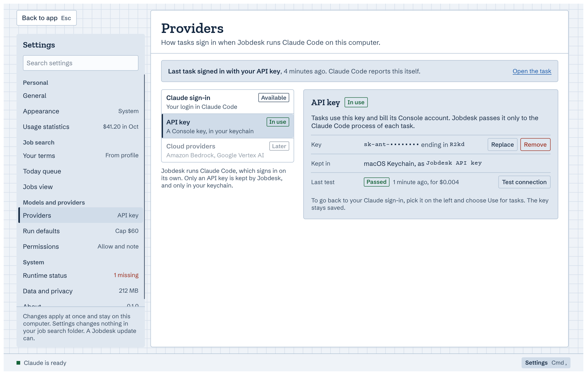
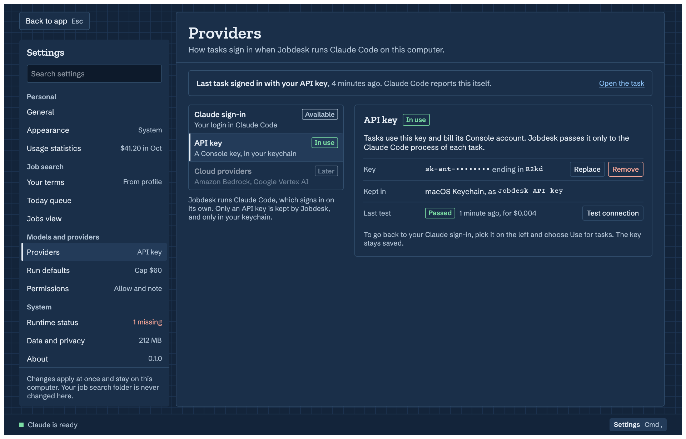
A job search holds a lot about you. Here is exactly what Jobdesk does with it.
The app never sends an application for you.
Send it from your own mail or the portal, then mark it sent. Jobdesk opens the task that records it.Free and open source under the MIT License. On first launch, choose your ai‑job‑search folder.
For Apple silicon. Open it and drag Jobdesk to Applications. Signed with a Developer ID and notarized by Apple.
Download for macOS (Apple silicon)Run the installer. It is not signed yet, so SmartScreen warns: click More info, then Run anyway.
Download for Windows (x64)Both buttons open the latest release on GitHub.
You need the Claude Code CLI, an Anthropic API key or Claude Code’s sign-in, and an ai‑job‑search checkout.